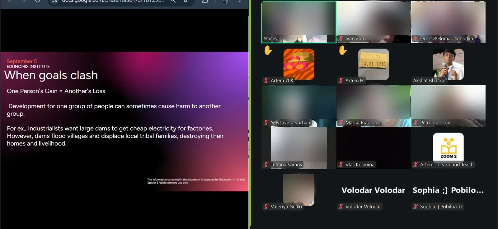
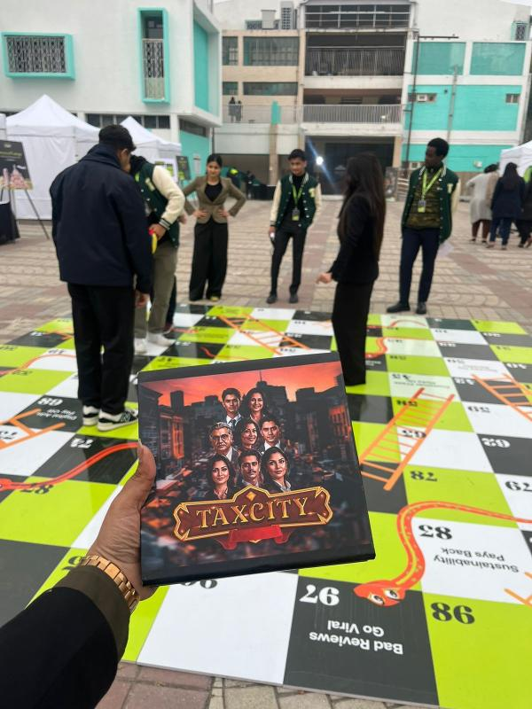
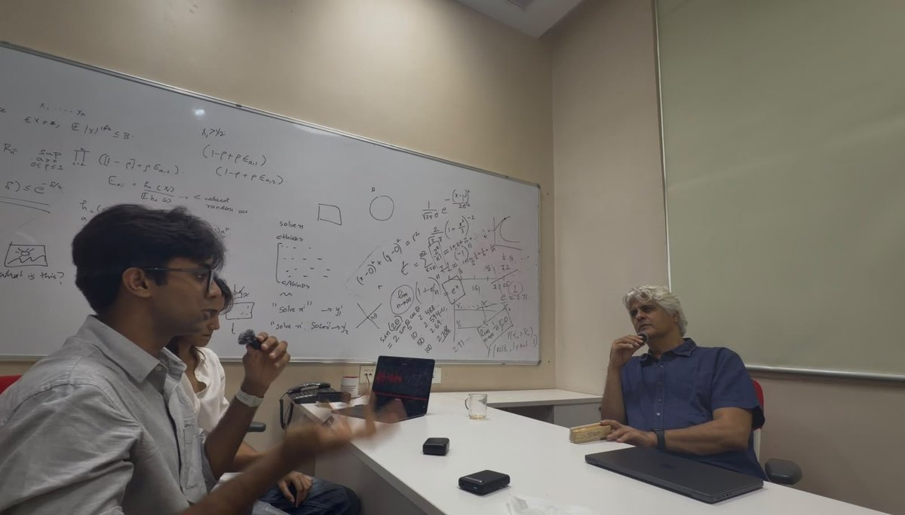

Financial Literacy
Most of what I've built started with one idea: that financial literacy shouldn't be a privilege. I am a strong advocate for financial literacy from an early age, and have been involved with several student literacy initiatives throughout high school and beyond.
I founded the India chapter of the Edunomix Institute, a US 501(c)(3) nonprofit, and built its first presence in South Asia. We ran a nationwide essay competition across nineteen states and fifty-four schools, held camps in personal finance, and, through the Ukraine Speaks English initiative with Learn and Teach UA, taught economics to displaced Ukrainian students whose schooling had been interrupted by the war.

The same idea carried into TaxCity, a government-recognised card game that teaches tax filing, where I served as Chief Financial Officer. It reached over 79,000 students across 27 countries and raised more than $120,000 in grants. We eventually wound it down: even with the grants, giving away thousands of free kits across India was no longer financially sustainable, so we donated what was left to a few government schools we had visited. Take a look at the game.

And because ideas are only as useful as their reach, I host the Decoded Podcast, where we interview economists and technologists and translate their ideas and breakthroughs for a general audience. It has won three Spotify for Creators awards and passed three hundred listening hours.

More recently, I've come to see that literacy alone is not enough of a defence. So I have started studying financial misinformation itself: how false financial claims spread across Indian social media, and who is most likely to pass them on. It is the same mission from a different angle, helping people navigate money safely, and it is what I spend most of my time on now.